i = 1, 2, ..., nで、
/math-b4a096d9d2236359a73b7386af0c9ab6.png "t_i\,\!") をi番目の観測値は、p 共変量
をi番目の観測値は、p 共変量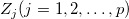
のベクターデータを持ち、これに対する故障時間または打ち切り時間にします。故障と打ち切りの過程は独立しているものとします。ハザード関数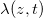
は、共変量 z を持つ個々のデータが時間tで故障する確率で、時間tは、個々が生存する時間として与えられます。Con比例ハザードモデルは、次のような形式になっています。 
i = 1, 2, ..., nで、をi番目の観測値は、p 共変量
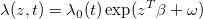
ここで/math-3edc1ca1e622708969948a2514e800f2.png "\lambda _0\,\!") は、ハザード関数のベースラインで時間関数ではなく、
は、ハザード関数のベースラインで時間関数ではなく、 /math-5b320b6d3d3254d936c752ae308dbfd8.png "\beta \,\!") は、不明なパラメータのベクターデータで、は分かっているオフセット値です。
は、不明なパラメータのベクターデータで、は分かっているオフセット値です。
時間 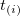 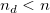 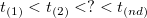/math-40b4081d7e04c18f0529a2e70a11e290.png "d_i\,\!") のように、
のように、/math-b0603860fcffe94e5b8eec59ed813421.png "\beta") に対する周辺尤度は、次式で近似されます。
に対する周辺尤度は、次式で近似されます。
|
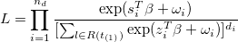 |
(1) |
ここで、 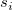 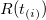 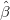/math-f82bfe760d9b9727abfa6b9f205b4291.png "t_{(i)}") での故障または打ち切りのデータすべてとなります。
での故障または打ち切りのデータすべてとなります。 /math-8d2bf18dffee8005942fdde98a69f3a1.png "\beta\,\!") のMLE(最大尤度見積り)は、
のMLE(最大尤度見積り)は、
|
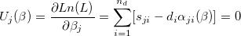 |
(2) |
j = 1, 2,..., p, ここで 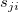
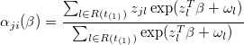
同様に、
|
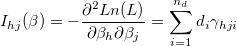 |
(3) |
ここで 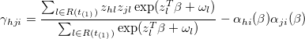
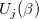 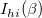 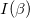 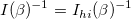 の分散－共分散行列を与えます。
共変量または共変量の線形の組合せは、時間と共に単調に増加または減少しており、1つ以上の 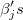
もし 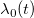 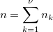/math-3b0619e986d2ebf9acd80c494cb421a4.png "\nu\,\!") の層でさまざまに変化すると、k番目の層にあるデータの数は
の層でさまざまに変化すると、k番目の層にあるデータの数は/math-3da18b12eaeaccf089fe39883448b765.png "n_k\,\!") 、 k = 1, ... , )で、
、 k = 1, ... , )で、
|
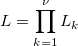 |
(4) |
ここで 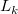観測値に対する尤度への寄与となります。 共変量係数が層にまたがって一定であると結論付けするとき、異なるベースラインハザード関数があります。
故障時間と関連しているベースライン生存関数は次のように見積もられます。
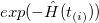
ここで 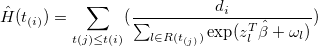
そして、 は、時間における故障の数です。 I番目の観測値の残差は次式で計算されます。
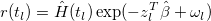
ここで 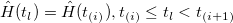
逸脱は、 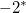/math-c15009ca5cbb034d023f145a4ed23b8d.png "\chi ^2\,\!") の分布で比較されます。または、パラメータ推定の正規性がz検定を形作るために使われます。推定値を標準誤差で除算するか、帰無仮説下のモデルに対するスコア関数がz検定を形作るために使われます。
の分布で比較されます。または、パラメータ推定の正規性がz検定を形作るために使われます。推定値を標準誤差で除算するか、帰無仮説下のモデルに対するスコア関数がz検定を形作るために使われます。